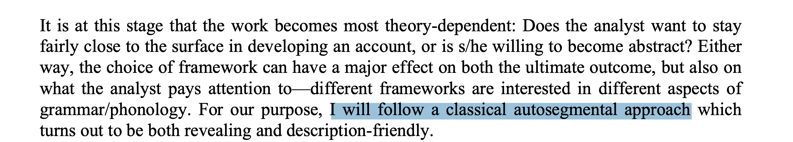
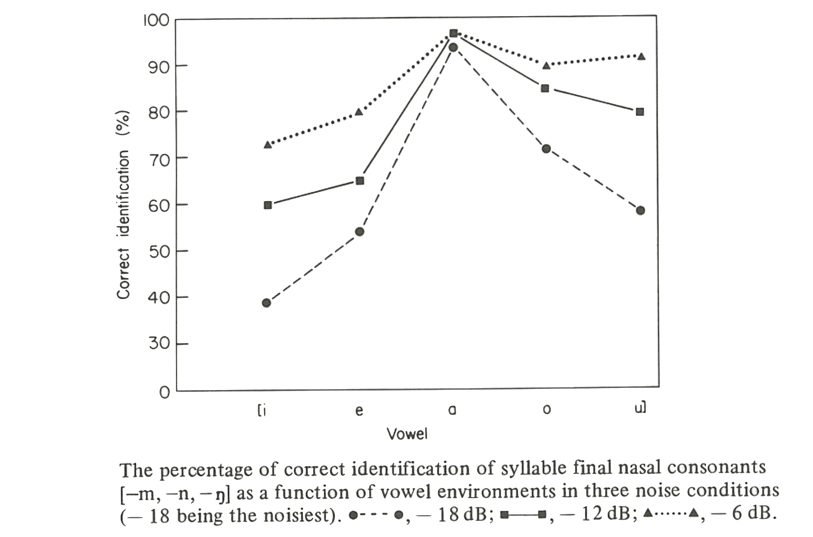

Employed by, or trained at, a university on the African continent (sub-Sahara)
Researching in a low-resource context
External grants are uncommon
Institutional support is low
Familiar with phonetics in theory, but not necessarily in practice
If you are not in this group, we ask that you prioritize those in this group for questions and feedback
All of us
Let’s assume that we are all committed to:
Improving empirical coverage of African languages’ sound structures
Building speech data resources for African languages
Ethos: “some data is better than no data”
Important as starting point for technical development
Developing capacity for an African phonetics practice
Doing these in a way which is adapted to local needs and demands
Why phonetics?
Definitions
This workshop is an introduction to instrumental phonetics
Relying on instrumental readouts for analysis
Not exclusively impressionistic: using the ear and transcribing speech sounds
“Phonetic” work may also refer to non-contrastive subphonemic detail
The specific way a phonemic contrast is produced
This is also important here, but we are focusing on instrumental methods
Why instrumental phonetics?
Several practical advantages over impressionistic approaches
Neutrality in the face of analytical and perceptual bias
Precision and reliability in detecting contrasts
Community use of the created data
Neutrality
In impressionistic phonological description, all presentation of data is filtered through the worker’s theoretical analysis
For example: autosegmental representations often make transcriptions more abstract Hyman (2014):545

Phonetic recordings allow better testing of hypotheses about phonological structure
Recordings do not intrinsically involve an analysis, and can be reanalyzed at a later date
Transcribed data (being analyzed) is much harder to use for this purpose
Neutrality
Even a trained phonetic ear is prone to making occasional mistakes based on perceptual bias
For example: nasal consonant codas are more often misidentified after non-low vowels Zee (1981)

Transcription mistakes permanently enter the record
Precision
Not all contrasts can be easily described by the analyst’s ear, especially in the moment
Fine vowel contrasts (especially central vowels)
Diphthongs versus consonant secondary articulation
Prenasalization versus N+C clusters
Subtle differences in tone level and contour
Multiple downsteps/upsteps
Recordings allow for careful listening later
Community use
Recordings are required for instrumental phonetic work: many incidental benefits
Speaker community may access the data
Literacy development (teaching tools)
Technical development (speech resources)
Community of scientific researchers may access the data
New analyses
Comparative work
Analysis may be replicated
Complementary methods
The aim is not to displace impression-based methods, but to complement them
Transcription will always be needed at some level
Our point is that it should not be exclusively relied on as the analytical object
Whenever possible, transcriptions ought to be supplemented with recordings, visualizations of recordings, or instrumental measures as evidence
Instrumental measures as “second opinion” for analysis
Recording acoustic data
Desired qualities
We always want acoustic speech data to be:
Low in background noise
Sufficiently loud against background noise, but not too loud
Free of echo
Certain details of format are also important:
Record using a high sampling rate, at least 22.1 kHz
Save in non-compressed format (such as .WAV; avoid .MP3)
Good recording
Here is an example of a good recording
Speaker’s voice is much louder than background, but is not too loud
Background is free of avoidable noise
Practically no echo
The following slides contain recordings which fail on one of the points above
Too noisy
Recordings should not contain excessive background noise
from a fan
from touching the microphone
Any noise, however quiet to your ears in the moment, will be much louder in the recording later
How to improve
Listen carefully to your surroundings, and avoid:
Rain on the roof (especially metal roofs)
Appliances (refrigerators, any motors or fans)
Busy roads (trucks, taxis)
Chickens, goats, children, etc.
Speaker should also minimize non-speech noise:
Touching or scratching microphone, or contacting shirt collar
Producing background noises when emphatic (striking chest or table, clapping hands)
Phone ringing or vibrating
Too much echo
If echo is strong, speech ends up overlapping itself; problem for listening and analysis later
(in tiled hallway)
(in concrete stairwell)
How to improve: listen for echo and choose surroundings which have less
“Soft” rooms reduce echo (couches, carpets, pillows, hanging clothes); tile, stone, and cement produce echo
Record in the back seat of a car (motor off) if available
Record outside if no suitable room exists
Too loud (clipped)
If the speaker is too loud and/or too close to the microphone, the device cannot respond enough; clipping results
This can also happen for , where the releases “pop” in the microphone
How to improve: make test recordings after you position your microphones
If there is general clipping, microphone needs to be further away or speaker needs to be quieter
If stops “pop”, position microphone to the side of the mouth
Gain can often be adjusted if you are using a recorder
Equipment
Not much equipment required: something to make recordings on
Laptop computer
Smartphone with recording app
“Awesome Voice Recorder X” (free with ads) is a good app
Others must definitely exist
Hand recorder/memo recorder
Professional recorder (Zoom H4N, etc)
A way of transferring files off of the device and storing for future analysis:
SD card
USB drive or external drive
Headphones, to check recording quality
Equipment
External microphones can increase the quality of acoustic data by recording less echo and background noise
Look for cardioid or unidirectional in the description if you are recording single speakers
Recording public events may require an omnidirectional microphone
An acoustic baffle can reduce echo
Soft, fluffy objects: blankets, sofas, etc.
This can also be achieved by selecting the recording setting carefully, and using a cardioid microphone
Other tips
Do not use computer noise reduction/filtering in general
Go into your computer’s sound settings and turn this off; make sure apps (i.e. Zoom) don’t have separate filters
Normal to hear slight “fuzz” in background, or very slight echo
Recording over Zoom works surprisingly well, if all else fails Ge, Mok, & Xiong (2021); Sanker et al (2021)
Some small effects on the recording are noted
Turn noise cancellation off if using to record (switch to “original sound”)
Better still to use the speaker’s phone on their end to record, and use Zoom to supervise the process
Basic Praat (tutorial)
Downloading
Configuration
Help pages
A first recording
Let’s record ourselves saying “xxx” in whichever language we would like
Instructions
“Save and close”
A note on recording
This is not typical for phonetics research
Usually we have many more repetitions of the phenomenon at issue
We need this to ensure we can average across enough instances when we come to analysis
Human speech production is inherently variable
To get at the actual tendency we need to have many examples of the same thing
We also prefer to work with multiple speakers whenever possible
Objects list
Saving your recording
as .WAV (the standard format for phonetics work)
Importing a sound file
Pius sound files
Understanding the data
Waveforms
Sound pressure vs. time
The pressure the sound waves make on the microphone
We expect any sound signal to oscillate
Sometimes this is periodic (repeating pattern); other times this is aperiodic (no clear pattern)
Sounds produced with a more open mouth are louder and have more sound pressure; these are thicker on the waveform
Interpreting waveforms
Durational measures (trivially)
Voicing
Spectrograms
We can also show the spectrogram for our recording
Breaks down our waveform to give us information about the sound spectrum
Spectrograms show time vs. frequency vs. sound pressure (color)
The darker the region, the more energy there is
Simple frequency examples
A sine wave which repeats every 440 ms looks like this:
If we add more sine waves it shows us this:
Think of speech as consisting of many, many of these
Interpreting spectrograms
Vowels and approximants have characteristic striping, horizontally and vertically
Voicing cycle is visible vertically
Formants are clearly visible horizontally
Fricatives have high-frequency or low-frequency noise
Dark smudges across entire portions of spectrogram
The further back the fricative, the lower the frequency
Stops show an absence of (most) energy followed by a burst across the whole spectrum
Interpreting spectrograms
Nasals look somewhat like vowels, with “smudged” formants and less energy (darkness)
Annotation
TextGrids
Interval tiers
Point tiers
Example
Pius data
Exporting data objects
Picture window
Spectrograms and waveforms can be drawn in the picture window
Drawing
Painting
“Garnishing”
Adding TextGrid annotation
Saving figures
Duration
What is it for?
Duration of segments, subsegments; timing of tones
Laryngeal contrasts (how long is aspiration of stop), gemination, vowel length, etc.
How to
Get times; log as tabular data (t1, t2, dur)
Example
Pius data?
Pitch and intensity
What are they for?
f0 signals pitch (tone) - all sorts of phenomena
Downstep, downdrift, pitch reset, lexical tone contrasts, intonation, etc
intensity is useful for a range of properties (cons lenition, stress, etc)
How to
Turn on “show pitch”; query pitch (f0)
Exactly parallel for intensity
Drawing figures
f0 and intensity tracks can be added to figures
Suggest not overlapping, but rather putting above/below
Annotation with TextGrids like before
Formants
What are they for?
Formant frequencies provide vowel quality and other contrasts
F1 inversely relates to height
F2 inversely relates to backness
F3 directly relates to retroflexion, etc.
Formant transitions; lateral and nasal quality, etc.
How to
Turn on “show formants”
Query formant listing
Formant estimation
Unlike the other measures, formant estimation often requires calibration to individuals
Speakers with low f0 need different settings compared to speakers with higher f0
Children (with very high f0) can be especially difficult
Often, different settings are needed for front and back vowels (especially back rounded vowels)
Adjust ceiling, adjust number of formants
Formant figures
Formants work best in an F1-F2 plot (which is not made in Praat), but formant tracks can be drawn like any other measure
References
Hyman, L. (2014). How to study a tone language. Language Documentation & Conservation, 8, 525-562. PDF
Ge, C., Xiong, Y., & Mok, P. (2021). How reliable are phonetic data collected remotely? Comparison of recording devices and environments on acoustic measurements. In Proc Interspeech 2021, 1683-1687. PDF
Sanker, C., Babinski, S., Burns, R., Evans, M., Johns, J., Kim, J., Smith, S., Weber, N., & Bowern, C. (2021). (Don’t) try this at home! The effects of recording devices and software on phonetic analysis. Language, 97(4), e360-e382. PDF
Zee, E. (1981). Effect of vowel quality on perception of post–vocalic nasal consonants in noise. Journal of Phonetics, 9(1), 35-48. DOI